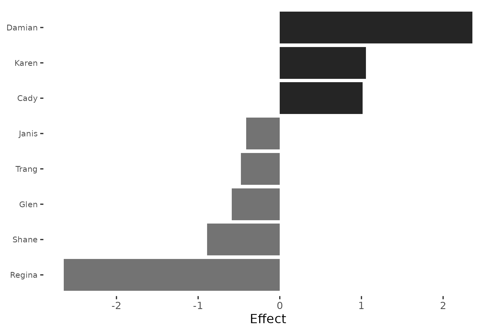

SRM Methodology: Mathematical Framework
Cassy Dorff, Shahryar Minhas, and Tosin Salau
2026-03-29
Source:vignettes/methodology.Rmd
methodology.RmdOverview
The Social Relations Model (SRM) was originally developed by Kenny and La Voie (1984) for round-robin designs in psychology, where every individual both rates and is rated by every other individual. The framework decomposes observed relational data into additive components that capture systematic patterns at the actor level and relationship-specific patterns at the dyadic level.
The srm package implements the SRM decomposition for
network data, extending its applicability to political science,
international relations, and other domains where relational data arises
naturally.
The Model
For a directed network with actors, let denote the observed tie from actor to actor . The SRM decomposes this as:
where:
- is the grand mean of the network
- is the actor effect for individual (sender tendency)
- is the partner effect for individual (receiver tendency)
- is the unique (dyadic) effect for the relationship
Interpretation
Actor effect (): How much actor sends ties above or below the network average, after adjusting for partner characteristics. A high positive means actor is an unusually active sender.
Partner effect (): How much actor receives ties above or below the network average, after adjusting for actor characteristics. A high positive means actor is an unusually attractive receiver.
Unique effect (): The component of the tie that cannot be explained by ’s general sending tendency or ’s general receiving tendency. This captures relationship-specific dynamics.
Estimation
Effect Estimates
The SRM effects are estimated using the following formulas. Let:
- (row mean for actor )
- (column mean for actor )
- (grand mean)
The estimated actor effect is:
The estimated partner effect is:
The estimated unique effect is simply the residual:
Note that these formulas include a correction for the finite-sample bias that arises because row and column means are not independent.
Variance Components
The SRM framework also estimates variance components that summarize the importance of each level of the decomposition.
Unique variance () and relationship covariance () are estimated from the unique effects:
where and .
Actor variance ():
Partner variance ():
Actor-partner covariance ():
Variance Partition
A key summary of the SRM is the variance partition, which expresses the proportion of total network variation attributable to each component:
This tells us whether network structure is primarily driven by differences in sending behavior (actor effects), receiving behavior (partner effects), or relationship-specific factors (unique effects).
Negative variance estimates
Because the SRM uses method-of-moments estimation, variance component estimates are not constrained to be non-negative. With small networks (roughly ), sampling variability can produce negative estimates for or . A negative estimate does not mean the true variance is negative — it means the data do not contain enough information to estimate that component reliably. When computing variance partitions, negative estimates are clipped to zero before calculating percentages.
Negative estimates are most common when one component dominates (e.g., nearly all variation is dyadic) and the network is small. With larger networks, the estimators stabilize and negative values become rare. If you encounter negative variance estimates, treat the decomposition as exploratory rather than definitive.
Example
We illustrate with the classroom dataset, a 12-student
directed friendship network at North Shore High (inspired by Mean
Girls) where students rate each other. The data is designed to
reflect the movie’s social dynamics: Regina is the Queen Bee (most
popular but stingiest rater), Damian is the warmest friend, and Gretchen
is liked least despite being a Plastic. Because the network is directed,
senders and receivers can have different roles.
library(srm)
data(classroom)
fit = srm(classroom)
summary(fit)
Social Relations Model - Variance Decomposition
==================================================
Component Variance % Total
------------------------------------------
Actor 1.4000 42.3%
Partner 0.8539 25.8%
Unique 1.0546 31.9%
Relationship (cov) 0.6885 --
Actor-Partner (cov) -0.2525 --Actor effects account for 42% of the variation (students differ in how generously they rate), partner effects for 26% (some students are rated higher by everyone), and unique dyadic effects for 32% (specific pairwise relationships). The dominance of actor variance reflects the wide range of sender tendencies at North Shore High — from Damian’s warmth to Regina’s selectivity. The positive relationship covariance (0.69) indicates reciprocity: when one student rates another highly, the favor tends to be returned. The negative actor-partner covariance (-0.25) captures the Queen Bee dynamic: generous raters are not the most popular, and the most popular student (Regina) rates others the lowest.
plot(fit, type = "variance")
The variance partition plot shows that sender tendencies are the largest source of variation, consistent with the strong personality differences in the movie. Receiver popularity and relationship-specific effects each contribute about a quarter to a third of the total.
plot(fit, type = "actor", n = 8)
The actor effect plot reveals which students deviate most from the network average. Damian (+2.36) is the warmest rater, followed by Karen (+1.05) and Cady (+1.01). Regina (-2.64) rates others far below average, followed by Shane (-0.89). Because this is a directed network, these actor effects are distinct from the partner effects, which capture who receives the most.
Permutation Inference
Because the sampling distributions of SRM variance components are not
straightforward, the srm package provides permutation-based
inference via permute_srm(). The procedure:
- Compute the observed variance components from the original matrix.
- Repeatedly permute rows and columns of the matrix independently, destroying actor/partner structure while preserving the marginal distribution.
- Recompute variance components on each permuted matrix.
- Compare observed values to the null distribution to obtain p-values.
pt = permute_srm(classroom, n_perms = 500, seed = 6886)
print(pt)
SRM Permutation Test
Permutations: 500
--------------------------------------------------
Component Observed Mean(Null) p
--------------------------------------------------
Actor Var 1.4000 1.1212 0.034 *
Partner Var 0.8539 0.6576 0.046 *
Unique Var 1.0546 2.2189 1.000
Relationship Cov 0.6885 -0.0048 0.018 *
Actor-Partner Cov -0.2525 0.0315 0.806
---
Signif. codes: 0 '***' 0.001 '**' 0.01 '*' 0.05 '.' 0.1The permutation test confirms that actor variance and partner variance are both significantly larger than expected under random relabeling (). The relationship covariance is also significant (), confirming genuine reciprocity in the friendship ratings. The unique variance is not significant against the null () because permutation preserves overall variability but destroys structure. The actor-partner covariance is not significant (), meaning the Queen Bee pattern is not strong enough to rule out chance at this sample size.
Bipartite Extension
For two-mode (bipartite) networks where senders and receivers are from different populations (e.g., countries sending aid to organizations), the decomposition simplifies because there are no self-ties and no reciprocity structure:
Effects are estimated as simple deviations from the grand mean: and . Because row and column actors are distinct populations, the bias corrections on the effect estimates themselves (needed in the unipartite case) do not apply. However, the variance components are bias-corrected using two-way ANOVA degrees of freedom: , with actor and partner variances adjusted for the noise contribution (, and similarly for partners). Only actor variance, partner variance, and unique variance are computed; covariance components (reciprocity, actor-partner) are not defined when senders and receivers come from different sets.
Longitudinal Analysis
When network data is observed over multiple time periods, the
srm package fits the SRM separately for each period and
provides tools for tracking how effects evolve:
-
srm_trends(): Extracts effects over time as a tidy data frame. -
srm_trend_plot(): Visualizes temporal trajectories. -
srm_stability(): Computes correlations between consecutive time points to assess rank-order stability.
data(trade_net)
fit_long = srm(trade_net)
srm_stability(fit_long, type = "actor")
time1 time2 correlation n
1 2015 2017 0.08276307 10
2 2017 2019 0.20194660 10The low correlations between consecutive periods (0.08 and 0.20) indicate that countries’ relative sending positions shift substantially across time. Unlike the ATOP data where the network is mostly static, the simulated trade data has independently generated effects at each period, so low stability is expected.
References
Dorff, Cassy, and Michael D. Ward. (2013). Networks, Dyads, and the Social Relations Model. Political Science Research Methods 1(2):159-178.
Dorff, Cassy, and Shahryar Minhas. (2017). When Do States Say Uncle? Network Dependence and Sanction Compliance. International Interactions 43(4):563-588.
Kenny, David A., and Lawrence La Voie. (1984). The Social Relations Model. Advances in Experimental Social Psychology 18:141-182.
Warner, Rebecca M., David A. Kenny, and Michael Stoto. (1979). A New Round Robin Analysis of Variance for Social Interaction Data. Journal of Personality and Social Psychology 37:1742-1757.